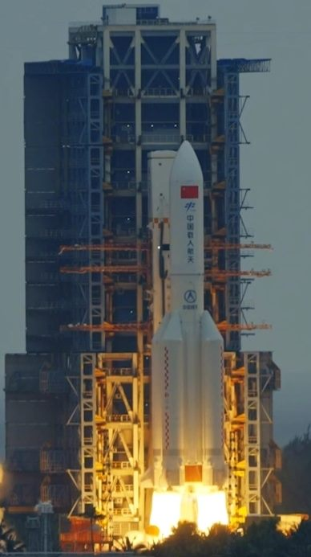

젤렌스키, 머스크에 자유훈장… 스타링크 러시아 영내 200㎞ 확대 요청
우크라이나 젤렌스키 대통령이 일론 머스크에게 자유훈장을 수여했다. 스타링크 통신 서비스를 러시아 영내 200㎞ 구간까지 확대해 달라는 요청이 배경으로 거론된다.
장입군 기자 · 2026.08.27
橋국제

볼로디미르 젤렌스키 우크라이나 대통령이 일론 머스크 스페이스X 최고경영자에게 자유훈장을 수여했다. 우크라이나 측은 전쟁 기간 스타링크 위성통신이 통신망 유지에 기여한 점을 훈장 수여 사유로 들었다.
광고 문의 · 300×250현지 보도에 따르면 우크라이나는 이와 함께 스타링크 서비스 가용 범위를 러시아 영내 최대 200㎞ 구간까지 넓혀 달라고 요청한 것으로 전해졌다. 장거리 무인기 운용과 정찰 활동의 통신 안정성을 확보하기 위한 것으로 해석된다.
스타링크는 저궤도 위성 수천 기로 구성된 통신망이다. 지상 기지국이 파괴된 지역에서도 통신이 가능해 전쟁 초기부터 우크라이나 군과 민간 인프라 운용에 사용돼 왔다.
동시에 서비스 제공 범위와 조건을 민간 기업이 결정한다는 점이 논쟁을 낳아 왔다. 과거에도 특정 지역에서 서비스가 제한돼 작전 계획이 영향을 받았다는 보도가 나왔고, 이를 계기로 각국은 군용 통신의 민간 의존도를 줄이는 방안을 검토해 왔다.
유럽 국가들은 자체 저궤도 통신망 구축 사업을 추진하고 있으며, 중국도 별도의 대규모 위성 통신 계획을 진행 중이다. 통신 인프라가 안보 자산으로 취급되는 흐름이 뚜렷해지는 모습이다.
머스크 측의 요청 수용 여부는 27일 오전 현재 공식적으로 확인되지 않았다.
출처·참고 (사실 확인용 — 본문은 직접 재작성)
· 聯合新聞網 2026-08-27 — https://udn.com/news/story/6809/8888890
· 聯合新聞網 2026-08-27 — https://udn.com/news/story/6809/8888890